本报告由大模型自动生成，可能存在理解、归纳或数据转述错误；请以原论文为准。 3D-ICE 4.0: Accurate and efficient thermal modeling for 2.5D/3D heterogeneous chiplet systemsKai Zhu, Darong Huang, Luis Costero, David Atienza · 2026 Design, Automation & Test in Europe Conference (DATE) · 2026 · 原文 · PDF 图表提取提示：报告提到的 Figure 1 未能自动裁出；请查看原论文 PDF。 报告模型：gemini-3.1-pro-preview / high 这是一篇关于针对 2.5D/3D 异构芯粒（Chiplet）系统进行高精度、高效率热建模的论文。文章介绍了 3D-ICE 4.0 框架，旨在解决现代复杂芯片架构中由于极高的功率密度和复杂的散热路径带来的热力学仿真难题。 为了方便理解本文的方法和实验，首先需要建立关于 2.5D/3D 芯粒系统与热力学仿真 的基础背景知识。 背景补充： 传统芯片通常是在一整块大硅片上制造所有电路（单片集成）。而 2.5D/3D 芯粒系统则是将复杂系统拆分成多个较小的芯片（芯粒，Chiplet），然后通过先进封装技术拼接在一起。2.5D 通常指芯粒并排铺设在一种被称为硅中介层（Interposer）的基板上；3D 则指芯粒在垂直方向上堆叠（例如逻辑芯片上方堆叠高带宽内存 HBM）。这种系统中包含了多种不同的材料层：有源硅层（Die，产生热量的核心）、中介层（负责信号路由）、底部填充物（Underfill，作为胶水固定芯片）、微凸块（Micro-bumps，实现电气连接的微小焊球）以及硅通孔（TSV，穿透硅片的垂直导线）。 在电子设计自动化（EDA）和体系结构协同设计中，数据流向通常是：架构模拟器输出芯片各个功能模块的“功耗分布图”（Power maps）或随时间变化的“功耗轨迹”（Power traces），这作为输入传递给热评估模型（如本文的 3D-ICE 4.0）；热模型结合芯片的“平面规划/物理布局”（Floorplan/GDSII）输出三维空间的“温度分布图”（Thermal maps）。架构层获取温度后，若发现存在局部过热（Hotspot），就会触发“热节流”（Thermal throttling，强制降频）或改变任务调度。因此，热模型的计算速度和准确度，直接决定了架构师能否在设计早期做出正确的功耗和性能权衡。 本文探讨的正是上述数据流中的核心环节——如何将真实的物理布局转换为既快又准的紧凑热模型（Compact Thermal Model, CTM）。以下是按论文逻辑展开的详细解析。 一、 引言（Introduction）与相关工作（Related Work）现代人工智能（AI）加速器和高性能计算（HPC）芯片的功耗经常达到数百瓦，由此产生的巨大热通量如果管理不当，会严重降低芯片吞吐量并加速器件老化。2.5D/3D 封装虽然提升了算力密度，但也引入了极其复杂的热流路径。例如，高功率逻辑芯片产生的热量，不仅会在水平方向传播，还会通过微凸块和中介层在垂直方向耦合到相邻的存储芯片上（热串扰），导致存储器刷新率剧增。这就要求热模型必须能捕捉微小尺度的局部热点。 传统的热分析面临着精度与效率的权衡（Trade-off）。有限元方法（FEM，如商业软件 COMSOL）将物理空间划分为极细微的网格求解偏微分方程，精度极高，但对内存和计算时间消耗巨大，无法用于快速的设计空间探索。为了提速，紧凑热模型（CTM，如 Hotspot、早期的 3D-ICE）被广泛采用。CTM 将热传导类比为电路：电压代表温度，电流代表热通量，电阻代表热阻，电容代表热容（背景补充）。这样一来，求解温度场就变成了求解由电阻电容构成的等效 RC 网络（稀疏线性方程组），速度能提升几个数量级。 然而，作者指出，现有的 CTM 存在三个致命问题，也就是本文试图解决的痛点：
表 1（Table I）对比了各种代表性热模型，清晰地展示了 3D-ICE 4.0 的全面性：它支持异构、各向异性、自动几何构建、自适应层划分、非均匀网格及其热感知生成策略，并具备并行加速能力。 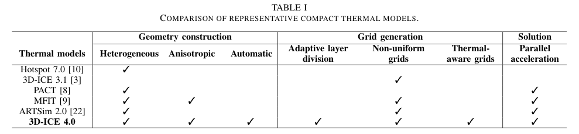 二、 3D-ICE 4.0 框架的核心方法（Method）针对上述痛点，文章介绍了 3D-ICE 4.0 的三个关键技术创新（图 1 标橙色的部分展示了工作流的新增内容）。 1. 结合详细布局的模型生成（Model generation with detailed layouts）为了保留工业设计文件（GDSII）中细粒度的异构材料分布，作者设计了一种基于四叉树（Quadtree）的自动网格划分（Tile generation）算法。这里论文所说的 Tile，定义为为了构建 RC 模拟网络，对芯片某一层物理平面进行矩形分割后得到的一个个互不重叠的空间子区域。 因为真实的版图里充满了极不规则且尺寸悬殊的多边形（如图 3 所示），作者使用算法 1（Algorithm 1）来生成 Tile：系统首先用边界框框住整个区域，然后使用 R-树（一种加速空间搜索的数据结构）查询该区域内的多边形。如果当前区域内的几何形状太复杂（由覆盖率 判断），就把该矩形切分成 4 个象限（子矩形），并递归执行，直到满足停止条件 （下标 表示条件，condition）或达到最大允许划分深度 （下标 表示最大）（这两个是用户设定的软件超参数）。最终，每个 Tile 会根据其内部包好的具体材料计算出各自的各向异性等效热阻。图 2 证明，保留这种详细的布局（图 2b）相比均质化模型（图 2a），预测出的热点温度升高了约 4 K，这在芯片热管理中是一个不容忽视的偏差。 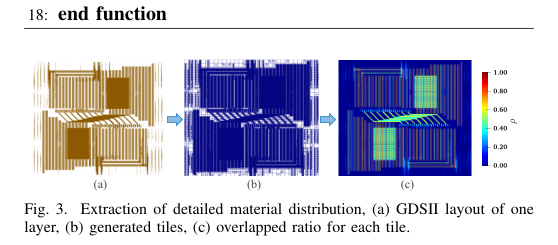 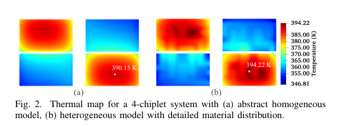 2. 自适应层划分（Adaptive layer division）如前所述，简单地把一个功能层当作一个模拟层会导致垂直方向误差。为了解决这个问题，作者提出在模型构建阶段，根据垂直热阻自动切分物理层。 作者首先定义了垂直热阻的相关量（文中内联公式）。对于堆叠中的第 层（下标 表示层索引），该层内部包含 个平面规划元素（下标 表示元素索引）。第 层内第 个元素的垂直热阻定义为 （上标 表示垂直）。这里 是第 层的厚度（单位原文未说明）， 是该元素的等效垂直热导率（单位原文未说明）， 是该元素的面积（单位原文未说明）， 的单位原文未说明，代表输入已知。 整层 的等效垂直热阻相当于所有这些元素并联，计算为 。 接着，为了量化包含 层的整个芯片堆叠在垂直方向上的热阻异构程度，作者首次给出了独立公式 1 来计算垂直热阻的方差： 在该式中，符号按从左到右定义如下：
背后的推理链与操作： 具有极大垂直热阻（）或者主导了全局方差 的层，会导致该层上下表面出现剧烈的温度突变。因此，算法会挑出这些层，将它们在垂直方向上迭代地“细分”为多个更薄的模拟子层（降低厚度 从而降低单层的 ）。直到全局方差降至预设阈值以下，或达到最大迭代深度。这一设计选择纯粹是在软件侧进行的，目的是为了平滑垂直层级的热阻分布，从而更精准地逼近真实的三维连续热传导。 3. 局部网格细化（Local grid refinement）为了在平面上实现网格效率最大化，作者提出了一种“热感知（Temperature-aware）”的自动细化策略（工作流见图 4）。 其逻辑是：先在一个极粗的网格上运行一次非常快的初始仿真；然后估算每个平面元素的平均温度梯度 ；对于像热点附近这样温度变化剧烈（温度梯度极大）的地方，将其划分成极细的网格以确保精度，而在温度平缓的地方保留粗网格以节省时间。 对于给定的元素，作者提出了公式 2 来决定其 x 方向上的网格尺寸： 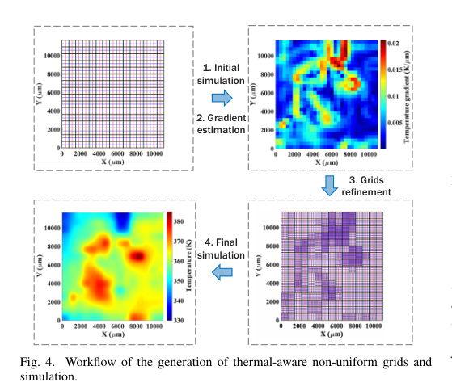 在该式中，符号按从左到右定义如下：
硬性约束的引入： 计算出的 不能无限大或无限小，因此必须将其强制限制在区间 内（下标 表示最小）。这里的 确保网格不会比物体本身还大，而 （允许的最小网格粒度）是一个硬性约束，它取决于当前计算机运行求解器时的内存上限和运行时限约束。y 方向的网格尺寸同理计算。 三、 实验结果与评估（Experimental Results）作者在一个配备 AMD EPYC CPU 的服务器上进行了三组实验（Cases），分别验证工具的效率、自适应分层的准确性以及非均匀网格的收益。 实验 1：精度与效率验证（对比最先进的并行 CTM 求解器 PACT）。 采用 的均匀网格。图 5 展示了 3D-ICE 4.0 与 PACT 输出的温度图几乎没有差异（误差在 0.1 K 左右），证实了精度。图 6 和图 7 展现了核心的效率优势：在不同规模的网格和不同 CPU 核心数下，3D-ICE 4.0 比 PACT 实现了 3.61 倍到 6.46 倍的加速。 为什么能快这么多？ 这种加速并非来自物理假设的改变，而是来自软件工程层面的优化。3D-ICE 4.0 使用了 OpenMP 并行化组装 RC 稀疏矩阵，并且接入了 SuperLU MT 这个专为多线程优化的稀疏线性求解器库。相比之下，PACT 依赖基于 SPICE 的求解器，并且 3D-ICE 4.0 的峰值内存占用也比 PACT 低 27.3%。 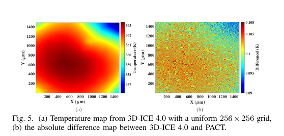 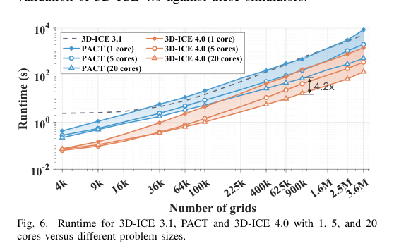 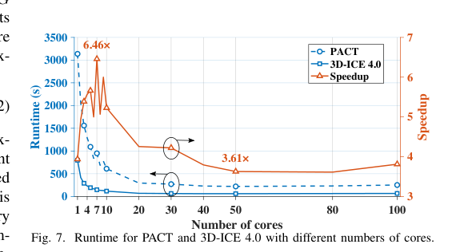 实验 2：带详细材料分布与自适应层划分的建模（对比商用有限元软件 COMSOL）。 实验采用了一个包含有源芯片、微凸块、中介层等的 2.5D 系统。表 2 列出了所使用的各种材料的热导率、密度和比热容（用于瞬态计算的物理参数）。 图 8 和图 10 解释了为什么必须进行自适应层划分（对应公式 1 的应用）。图 8(b) 是 COMSOL 算出的真实情况。图 8(c) 表明老的 3D-ICE 3.1 连热点分布都算错了；图 8(d) 表明 3D-ICE 4.0 即使引入了详细材料，如果没有划分垂直层，依旧算不准。而在迭代 8 次、将厚热阻层切薄之后，图 8(e) 成功逼近了 COMSOL。图 9 直观显示，随着迭代深入，各层垂直热阻的方差（黑线，Variance）不断下降，所有功能层的预测误差（RMSE）也随之收敛下降。这证明公式 1 引导的分层逻辑显著改善了结果并使其向 COMSOL 参考值收敛。 为了验证随时间变化的瞬态热传导，作者使用了一个高斯调制正弦波作为芯片功耗的输入激励，首次引入公式 3： 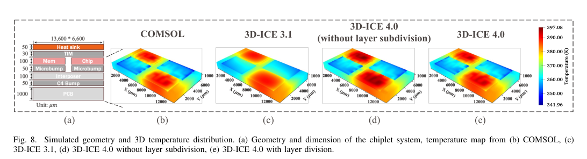 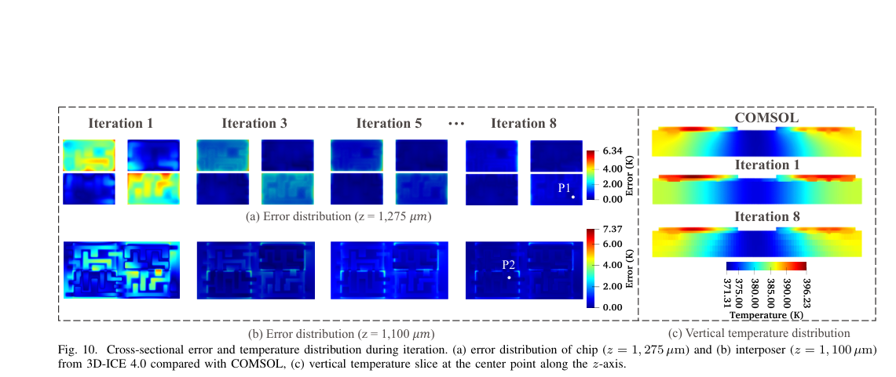 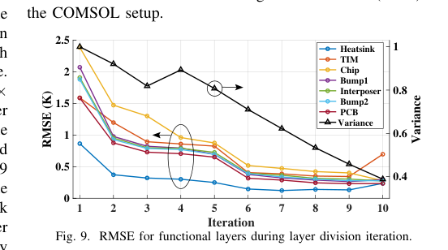 在该式中，符号按从左到右定义如下：
实验 3：由局部细化网格带来的效率提升。 本实验验证公式 2 的有效性。在此次测试中，设 ，通过调节 来改变总的网格数量。图 12 中的核心结果表明，为了达到均方根误差（RMSE）低于 0.25 K 的目标，非均匀网格生成策略只需要 11,787 个网格，而传统的全局均匀网格策略则需要 15,360 个网格。因此，基于温度梯度的网格策略不仅成功捕捉了陡峭的温度变化（最大峰值误差从 1 K 降到 0.6 K），还在不牺牲精度的情况下使整个网格系统的计算复杂度降低了 23.3%。 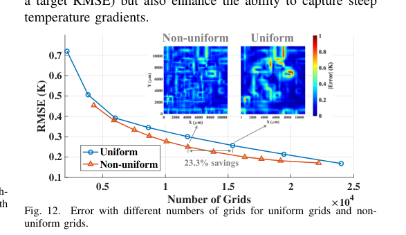 四、 总结（Conclusion）与全文主线梳理贯穿全文的主线： 摩尔定律在物理极限受挫后，业界转向了 2.5D/3D 芯粒架构来延续算力增长，但这使得“热分布”取代了“晶体管尺寸”成为新的设计瓶颈。为了在架构评估（例如设计任务调度或热节流机制时）获得快速且准确的温度反馈，学术界严重依赖紧凑热模型（CTM）。然而，传统 CTM 往往为了速度而在物理布局和网格划分上粗制滥造。本文的 3D-ICE 4.0 证明了，无需妥协于均质化，可以直接吃进真实的工业版图（GDSII），通过四叉树智能切分平面（Tile 划分）、运用方差公式平滑垂直方向的突变（自适应层划分），以及基于先验温度梯度来疏密有致地分配网格资源。最后再辅以现代多核并行算法引擎，成功实现了在逼近顶级商业物理求解器（COMSOL）精度的前提下，斩获极高的计算加速比，从而修复了体系结构与 EDA 热分析之间那条至关重要的信息反馈链条的保真度。 关键假设与局限性补充说明： 文章的网格细化逻辑（公式 2）建立在一个关键假设之上：它需要先用粗网格跑出一次“初始平均温度梯度”。如果初始网格过粗，完全跨过了某个极小的瞬态热点，那么该处的梯度 将被错误地估计为极小，导致后续细化策略失效。同时，方法的稳定性高度依赖于用户对超参数（如最大细化深度 、梯度基础参数 和网格控制权重 ）的选取，过度严苛的参数可能会导致底层内存耗尽（尽管有 兜底）。这些结论证明了该工具的巨大潜力，但在实际工程应用中，仍需要使用者对被测对象的发热特质具备一定的先验经验。 |